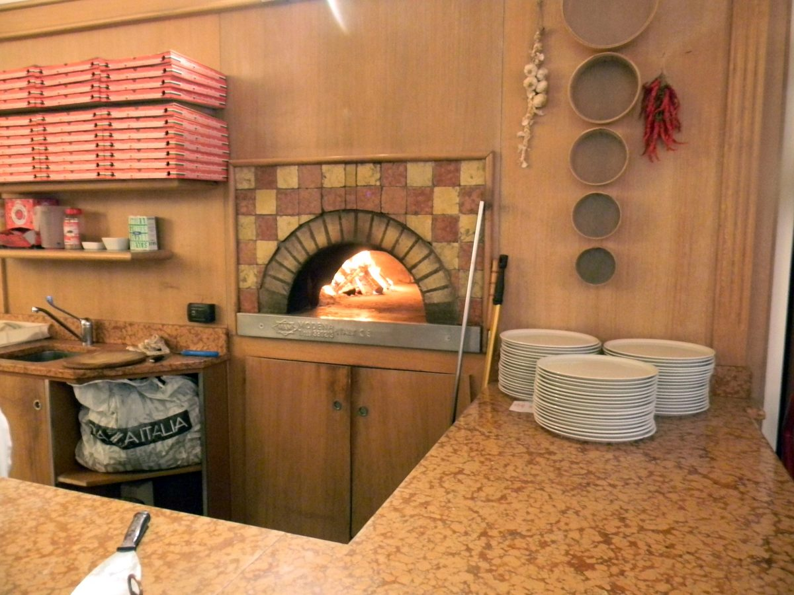
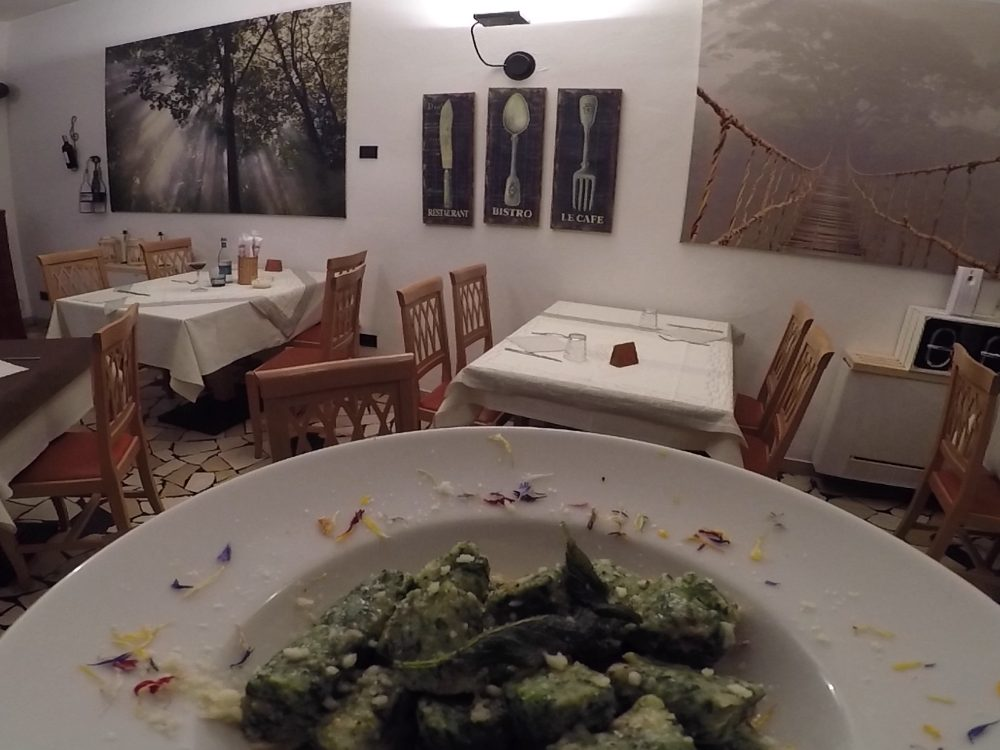
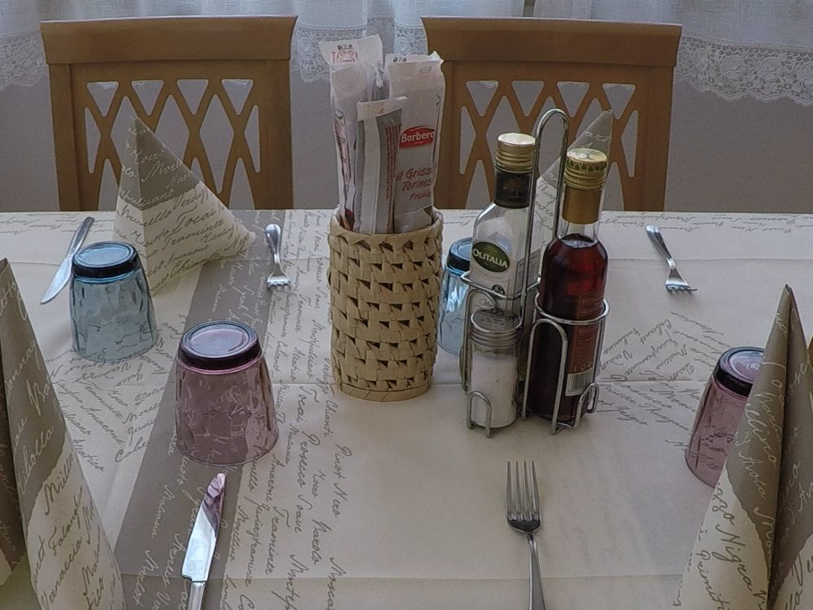
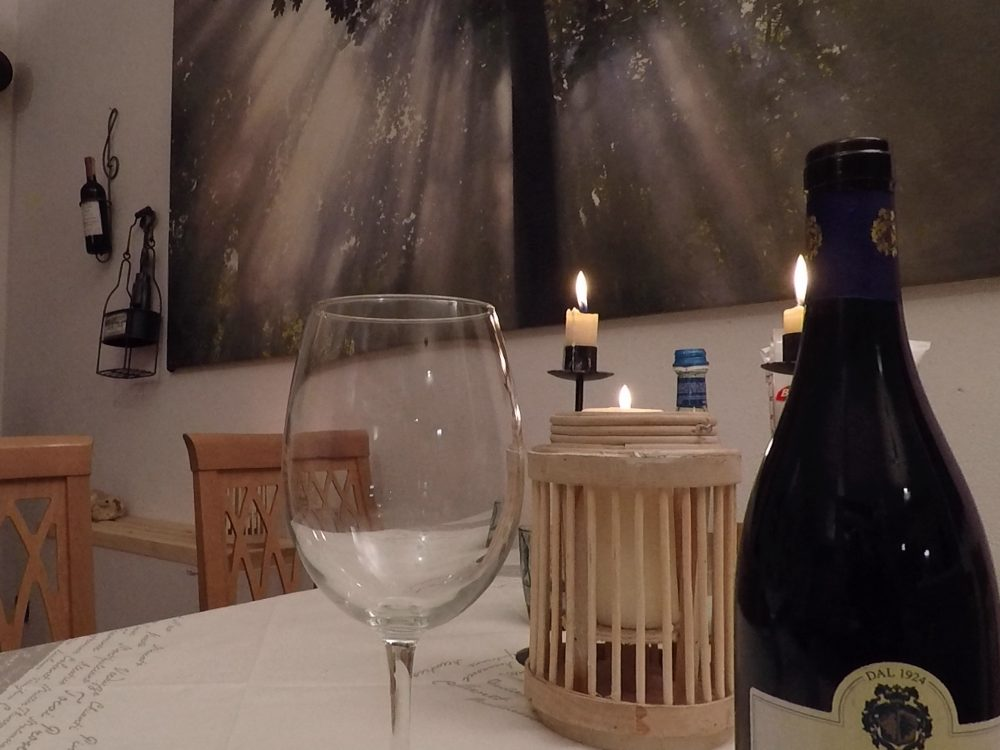
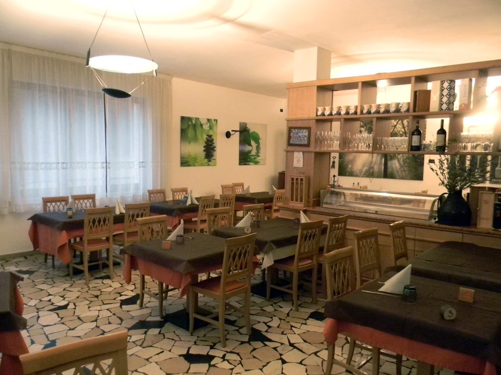

Il ristorante
Qual è la cosa che più di tutte ci fa sentire a casa quando siamo in vacanza? Mangiare bene. Qui alla Locanda Ampola ne siamo convinti.
- Pranzo
- 12:00-14:30
- Cena
- 18:30-22:00
La spesa, ogni mattina
Curiamo personalmente la cucina e andiamo a fare la spesa ogni mattina, per scegliere i prodotti migliori del giorno. Prepariamo piatti con i prodotti tipici del territorio ledrense, cercando di assecondare i gusti di ognuno.
- Ristorante e pizzeriaLa cucina e la pizza, a pranzo e a cena.
- Buffet di insalate e verdureRicchissimo, con le verdure di stagione.
- Senza glutine e diete specifichePer chi ha intolleranze c'è la cucina senza glutine; per altre esigenze cerchiamo di accontentarvi.
- Cerimonie e cene aziendaliChiamateci per organizzarle insieme.





Vi aspettiamo in Valle di Ledro
Per una camera, un tavolo al ristorante, una cerimonia o una cena aziendale: chiamateci o scriveteci.
Telefono 347 517 3158
Email info@locandaampola.it
Dove Strada per Tremalzo 6, Tiarno di Sopra, Ledro